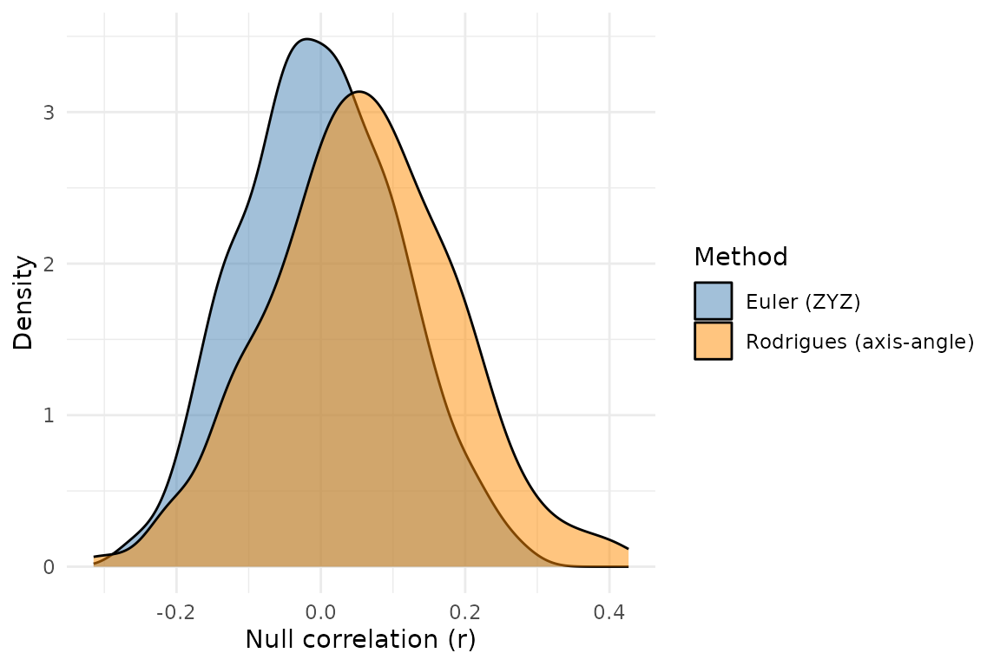

Every spin test starts the same way: pick a random rotation, apply it to the cortical sphere, reassign values based on what ended up where. The rotation is the engine of the whole procedure. How you generate that rotation turns out to be a choice worth understanding.
neuromapr offers two methods for generating random 3D rotations. The
default ("euler") matches the Python neuromaps
implementation. The alternative ("rodrigues") takes a
different mathematical path to the same goal. Both work. They differ in
geometry, numerical behaviour, and how they sample the space of all
possible rotations.
What a random rotation needs to do
A spin test rotates vertex coordinates on the cortical sphere, then checks whether the spatial relationship between two brain maps survives the scramble. Do this a thousand times and you have a null distribution.
For the null distribution to be valid, the rotations need two properties:
- Coverage: they should explore the full space of 3D rotations, not cluster around certain orientations.
- Axis uniformity: the rotation axis should be equally likely to point in any direction.
The space of all 3D rotations is called SO(3). It is a three-dimensional manifold, and sampling from it uniformly is not as simple as drawing three random numbers.
Euler ZYZ rotations
The default method decomposes a rotation into three sequential turns around fixed axes: first Z, then Y, then Z again.
The recipe:
- drawn uniformly from
- drawn uniformly from
- drawn uniformly from
The trick is in the second step. Drawing uniformly rather than itself corrects for the non-uniform volume element of the Euler angle parameterisation. Without this correction, rotations near the poles of the sphere would be oversampled.
This produces rotations that are Haar-uniform on SO(3) — the mathematical gold standard for “every orientation is equally likely.” It is the same method used in Python’s neuromaps, so results are directly comparable when using the same random seed.
set.seed(1)
neuromapr:::random_rotation_euler()
#> [,1] [,2] [,3]
#> [1,] 0.41751505 -0.27132921 -0.8672149
#> [2,] -0.90378926 -0.02521532 -0.4272343
#> [3,] 0.09405404 0.96215625 -0.2557522The resulting 3x3 matrix is orthogonal with determinant 1 — a proper rotation.
Rodrigues axis-angle rotations
The alternative method parameterises a rotation by what it physically does: spin by some angle around some axis.
The recipe:
- Draw a random axis uniformly on the unit sphere (by normalising a 3D standard normal vector).
- Draw angle uniformly from .
- Build the rotation matrix using the Rodrigues formula.
set.seed(1)
neuromapr:::random_rotation_rodrigues()
#> [,1] [,2] [,3]
#> [1,] 0.96106288 -0.2745684 -0.03115061
#> [2,] 0.26232933 0.9419816 -0.20941349
#> [3,] 0.08684162 0.1930878 0.97733087A different matrix from the same seed, because the two methods consume random numbers differently.
Where Rodrigues has the edge
Geometric transparency
The Euler method describes a rotation as a composition of three turns around coordinate axes. The result is correct but opaque — given the triple , it is not obvious what the rotation does to the sphere.
The Rodrigues method describes a rotation as “turn by around axis .” That maps directly to the physical intuition of taking a brain hemisphere and spinning it. Each null permutation has a single, interpretable axis and angle.
Axis uniformity is explicit
For spin tests, the rotation axis is arguably the most important degree of freedom. It determines which vertex ends up near which other vertex after rotation — the spatial scrambling that the entire null hypothesis rests on.
The Rodrigues method achieves uniform axis sampling directly. Drawing
from
and normalising is one of the most well-studied methods for uniform
points on
,
and R’s rnorm() is heavily tested.
The Euler method achieves axis uniformity indirectly, as a mathematical consequence of the ZYZ decomposition. Both are correct, but the Rodrigues approach makes the property visible in the code.
Numerical stability
The Euler method computes
where
is uniform on
.
When
lands near
— which happens regularly — acos() loses precision because
its derivative diverges at the boundaries. The resulting
values near
and
carry more floating-point noise than values in the middle of the
range.
The Rodrigues method avoids inverse trigonometric functions entirely
in the sampling step. The only trig calls are cos(theta)
and sin(theta), which are well-conditioned for all
.
Idiomatic R
The normalised-Gaussian-on-sphere technique is the standard R idiom for uniform spherical sampling. You will find it across pracma, movMF, and other packages that need random directions. The Rodrigues method builds on this established pattern rather than introducing the less common ZYZ convention.
Where Euler has the edge
The Euler method produces rotations that are exactly Haar-uniform on SO(3). The Rodrigues method, as implemented, does not.
The Haar measure in axis-angle coordinates has density proportional to — it weights angles near more heavily than angles near . Sampling uniformly slightly overweights near-identity rotations (small ) and underweights half-turn rotations (near ).
In concrete terms: if you generated a million Rodrigues rotations and looked at the distribution of rotation angles, you would see a uniform distribution on . A million Euler rotations would show the correct Haar density , which rises from zero at to a peak at .
How much does the difference matter?
For spin tests on brain maps, not much.
set.seed(42)
n_lh <- 50
n_rh <- 50
coords <- list(
lh = matrix(rnorm(n_lh * 3), ncol = 3),
rh = matrix(rnorm(n_rh * 3), ncol = 3)
)
coords$lh <- t(apply(coords$lh, 1, function(x) x / sqrt(sum(x^2))))
coords$rh <- t(apply(coords$rh, 1, function(x) x / sqrt(sum(x^2))))
data_x <- rnorm(n_lh + n_rh)
data_y <- 0.3 * data_x + rnorm(n_lh + n_rh, sd = 0.9)Run the same spin test with both rotation methods:
nulls_euler <- null_alexander_bloch(
data_x,
coords,
n_perm = 500L,
seed = 1,
rotation = "euler"
)
nulls_rodrigues <- null_alexander_bloch(
data_x,
coords,
n_perm = 500L,
seed = 1,
rotation = "rodrigues"
)Compare the null distributions:
null_cors_euler <- apply(nulls_euler$nulls, 2, cor, data_y)
null_cors_rodrigues <- apply(nulls_rodrigues$nulls, 2, cor, data_y)
df <- data.frame(
r = c(null_cors_euler, null_cors_rodrigues),
method = rep(c("Euler (ZYZ)", "Rodrigues (axis-angle)"), each = 500)
)
ggplot2::ggplot(df, ggplot2::aes(x = r, fill = method)) +
ggplot2::geom_density(alpha = 0.5) +
ggplot2::scale_fill_manual(values = c("steelblue", "darkorange")) +
ggplot2::labs(x = "Null correlation (r)", y = "Density", fill = "Method") +
ggplot2::theme_minimal()
Null correlation distributions from 500 spin permutations using Euler (blue) and Rodrigues (orange) rotations. The two methods produce effectively indistinguishable null distributions.
The two distributions overlap almost entirely. Any difference in the resulting p-values is well within the Monte Carlo noise of the permutation test itself.
obs_r <- cor(data_x, data_y)
p_euler <- mean(abs(null_cors_euler) >= abs(obs_r))
p_rodrigues <- mean(abs(null_cors_rodrigues) >= abs(obs_r))
data.frame(
method = c("euler", "rodrigues"),
p_value = c(p_euler, p_rodrigues)
)
#> method p_value
#> 1 euler 0
#> 2 rodrigues 0Three things explain why the theoretical non-uniformity is harmless in practice:
Axis uniformity dominates. The axis determines which vertex maps near which other vertex. Both methods produce perfectly uniform axes. The spatial scrambling — the part that matters for the null hypothesis — is equivalent.
Non-trivial rotations are all you need. The slight oversampling of small-angle rotations means a few more near-identity permutations in the null distribution. These are a tiny fraction of 500 or 1000 permutations and do not meaningfully shift the distribution.
Monte Carlo noise swamps the difference. With a finite number of permutations, the sampling variability in the estimated p-value is far larger than the bias introduced by non-Haar angle sampling.
Choosing a method
The rotation argument is available in all five
spin-based null model functions: null_alexander_bloch(),
null_spin_vasa(), null_spin_hungarian(),
null_baum(), and null_cornblath().
null_alexander_bloch(
data,
coords,
n_perm = 1000L,
rotation = "rodrigues"
)When to use which:
Reproducing Python neuromaps results — stick with
"euler"(the default). With the same seed, you will get the same rotation matrices as the Python implementation.Working purely in R and preferring cleaner numerics —
"rodrigues"is the more natural choice. The axis sampling is more transparent, the code avoidsacos()boundary issues, and the practical impact on spin test p-values is negligible.Publishing results — either is defensible. If a reviewer asks, Euler is Haar-uniform and Rodrigues is not, but for spin test inference the distinction is academic. State which you used and move on.
Summary
| Euler (ZYZ) | Rodrigues (axis-angle) | |
|---|---|---|
| Haar-uniform on SO(3) | Yes | No (mild angle bias) |
| Axis uniform on | Yes | Yes |
| Numerical stability |
acos() boundaries |
Stable everywhere |
| Geometric interpretation | Indirect (3 rotations) | Direct (axis + angle) |
| Matches Python neuromaps | Yes | No |
The default is there for cross-language reproducibility. The alternative is there because sometimes the R-native path is the cleaner one, and the statistical cost of taking it is effectively zero.
References
Alexander-Bloch AF, Shou H, Liu S, et al. (2018). On testing for spatial correspondence between maps of human brain structure and function. NeuroImage, 175, 111–120. doi:10.1016/j.neuroimage.2018.04.023
Markello RD, Hansen JY, Liu Z-Q, et al. (2022). neuromaps: structural and functional interpretation of brain maps. Nature Methods, 19, 1472–1480. doi:10.1038/s41592-022-01625-w
Markello RD, Misic B (2021). Comparing spatial null models for brain maps. NeuroImage, 236, 118052. doi:10.1016/j.neuroimage.2021.118052